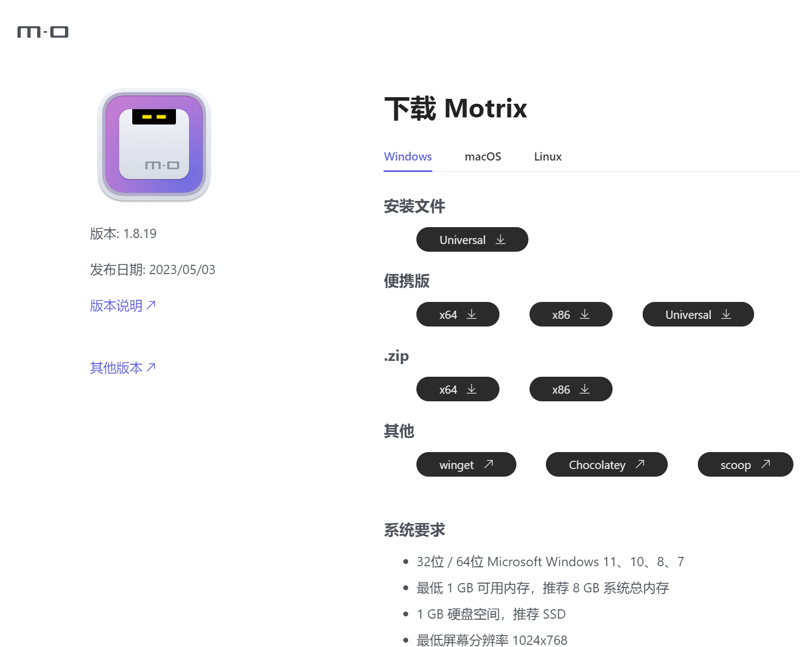
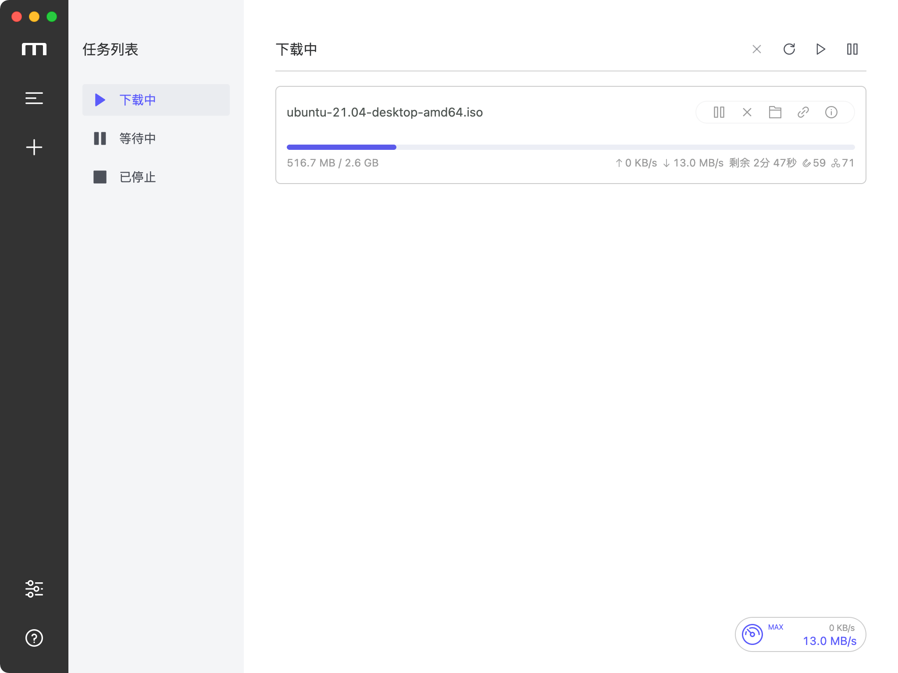
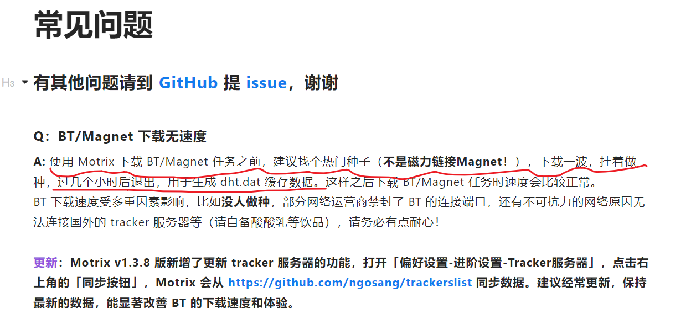
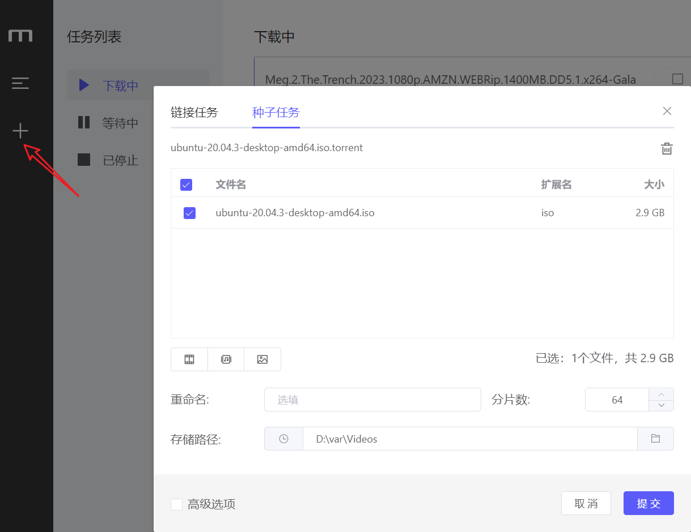
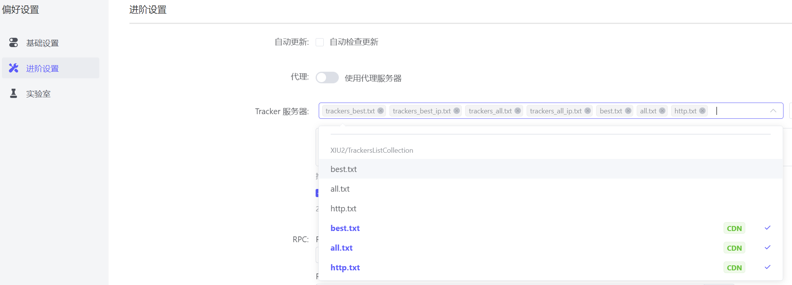
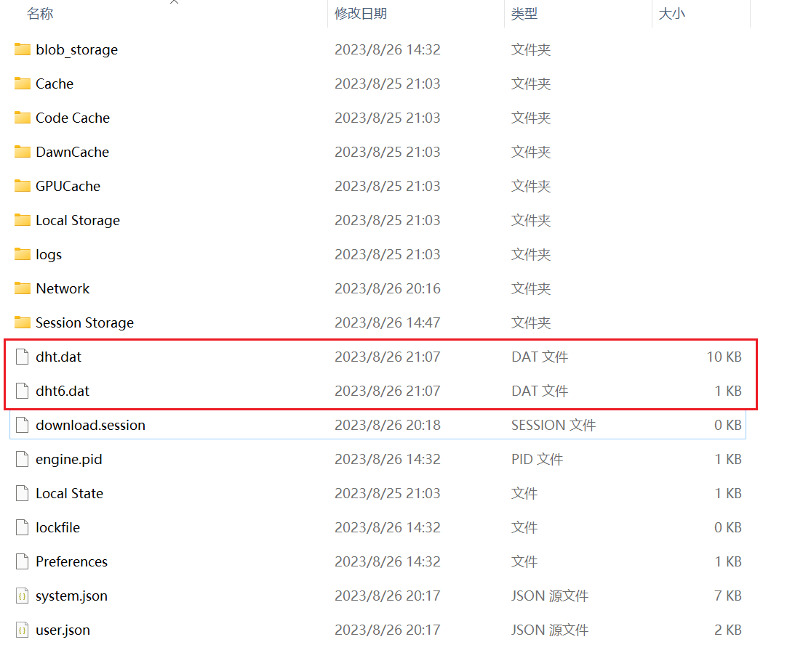

告别迅雷，Motrix
这世上的事情最怕“用心”二字。 有些事，用心了就能做好；有些事，用心了越来越糟糕。
迅雷下载今天终于让我忍无可忍：乱七八糟的广告一堆；没有充值会员就给你限速。
Motrix您好
一个下载torrent种子的神器，也可以下来磁力链接magnet:?xt=。
官网链接如下，可自行下载安装：
Motrix官网

界面清爽如下

下载速度 0 byte/s ？
初次使用Motrix下载magnet:?xt=磁力链接的时候会没有速度，这个在官网的常见问题做了说明。
常见问题

提示讲述的很清楚，请使用种子文件(也就是**.torrent**后缀的文件)。
这里提供一个ubuntu的镜像文件给大家做引子来生成**dht.dat**缓存文件。
ubuntu镜像
下载完种子文件之后，将种子文件拖拽进入Motrix即可，如下图所示：

同时按照常见问题提示，设置->偏好设置->进阶设置->Tracker服务器，选中7个CDN节点保存！

如何知道dht.dat文件是否缓存好？
打开你的Motrix设置->进阶设置，并拖动到最底下，有一个下载会话路径，打开这个路径后面的文件夹图标，dht.dat文件会生成在这个目录底下。 dht.dat文件等你下载完ubuntu.torrent的镜像之后，会在上图目录底下生成一个10KB的文件，如下所示： 
玩耍吧
现在你可以尽情的下载，magnet:?xt=开头的磁力文件啦！